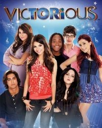
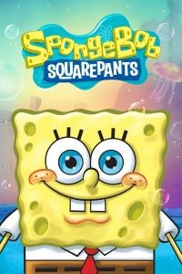

.png)
The Simpsons - Los Simpson

| Estreno | 17 de diciembre de 1989 | Temporadas | 32 |
| Episodios | 705 |
| Duración | 25 minutos |
| Protagonistas | Dan Castellaneta, Julie Kavner, Nancy Cartwright, Yeardley Smith, Elizabeth Taylor, Harry Shearer, Pamela Hayden |
| Productor(es) | Al Jean, Ian Maxtone-Graham, John Frink, James L. Brooks, Matt Groening, Matt Selman, Sam Simon |
Sinopsis:
La familia Simpson es una familia peculiar. Un hijo cuya única aspiración es crear conflictos; una hija pedante con serios problemas emocionales; una esposa con una melena de color azul de más de medio metro (de alto) y con una sangre tan fría que por muchos problemas que le dé la familia nunca se enfada. Y un marido... excepcional: vago, inculto y alcohólico. La única que parece salvarse es la pequeña Maggie. Pero la verdad es que, en el fondo, se quieren. Son la viva imagen de la familia típica americana... llevada a los máximos extremos. Esta serie creada por Matt Groening disfruta de un éxito rotundo en el mundo entero.
Información obtenida de:
Victorious
| Estreno | Estados Unidos 27 de marzo de 2010, México 31 de agosto de 2011 | Temporadas | 4 |
| Episodios | 60 |
| Duración | 24 minutos |
| Protagonistas | Victoria Justice, Leon Thomas III, Matt Bennett, Elizabeth Gillies, Ariana Grande, Avan Jogia, Daniella Monet |
| Productor(es) | Dan Schneider, Robin Weiner, Warren Bell, Joe Catania, Bruce Rand Berman |
Sinopsis:
Tori Vega, una chica de 16 años que creció a la sombra de su hermana mayor, 'Trina', una artista que siempre fue la estrella de la familia. Victorious, sigue el camino de 'Tori' hacia el descubrimiento de su creatividad interior y de darse cuenta de que entretener a los demás es lo que más la hace feliz. Tori sustituye en la "gran presentación" a su hermana Trina quien sufre una reacción alérgica a unas hierbas chinas con las que hizo gárgaras. El director de Hollywood Arts le ofrece a Tori estudiar en dicha escuela y ella acepta. Pasará por diversas aventuras junto a sus amigos André, Robbie, Cat, Jade y Beck. Todos talentosos y con personalidades diferentes: André es un joven músico, alegre y muy amigo de Tori Vega; Robbie acostumbra a llevar un títere llamado Rex. Robbie es un joven nerd muy talentoso, a como dé lugar quiere conquistar a cualquier chica, sin embargo, su único amor es Cat, una joven dulce, ingenua, alegre y coqueta con cabello rojizo, talentosa en el canto y baile, en ocasiones es maltratada por Jade, sin embargo, ambas tienen una buena relación amical. Jade, es una joven que ama las tijeras y películas de terror, acostumbra a tratar mal a todos en la escuela especialmente a Tori Vega, pero en el fondo es una buena persona y ha demostrado estimar y preocuparse únicamente por Cat, su mejor amiga. Beck es un joven actor y es el novio de Jade, su relación sentimental fue mejorando a medida de las temporadas. El transcurso de la serie se basa únicamente en que Tori Vega encuentre el éxito, brille, y logré cumplir su sueño: ser estrella del pop.
Información obtenida de: EcuRed
Bob Esponja
| Estreno | 1 de mayo de 1999 | Temporadas | 13 |
| Episodios | 270 |
| Duración | 11 minutos aprox |
| Protagonistas | Tom Kenny, Bill Fagerbakke, Rodger Bumpass, Clancy Brown, Carolyn Lawrence, Doug Lawrence, Tom Kenny |
| Productor(es) | Stephen Hillenburg, Paul Tibbitt, Vincent Waller, Marc Ceccarelli |
Sinopsis:
Bob Esponja vive en Fondo de Bikini, en una casa con forma de piña donde también vive su mascota, Gary. Bob adora su trabajo, siendo el cocinero de cangreburguers en el Crustáceo Cascarudo.
Sin embargo, él tiene la habilidad de meterse en todo tipo de problemas sin quererlo. Si no está molestando a su vecino, Calamardo Tentáculos, se mete en muchos problemas y raras experiencias junto a sus amigos, por lo general Patricio Estrella, Arenita Mejillas, entre otros.
Información obtenida de: FANDOM
La familia P. Luche

| Estreno | 7 de agosto de 2002 | Temporadas | 3 |
| Episodios | 80 |
| Duración | 22 minutos |
| Protagonistas | Eugenio Derbez, Consuelo Duval, Luis Manuel Ávila, Regina Blandón, Miguel Pérez, Bárbara Torres, Brayan Gibran Mateo |
| Productor(es) | Eugenio Derbez, Elías Solorio Lara |
Sinopsis:
La serie trata sobre las vivencias de una familia común y corriente oriunda de la ficticia Ciudad Peluche. La familia está integrada por Federica, una esposa superficial que está a cargo del control de la casa, Ludovico, un esposo torpe y crédulo que se limita a escuchar las órdenes de su esposa, Ludoviquito, el hijo menor que siempre sabe cómo sacar provecho de los demás, Junior, un segundo hijo que era un policía, hasta que Federica lo atropelló, para evitar ser encarcelados, Ludovico y Federica le dicen que es un niño y que es adoptado, Bibi quien es la hija mayor se la considera una niña "rara", y Excelsa, una sirvienta perezosa proveniente de Argentina hincha del equipo Boca Juniors.
Información obtenida de:Wikipedia
Adventure Time - Hora de aventura

| Estreno | 5 de abril de 2010 | Temporadas | 10 |
| Episodios | 283 |
| Duración | 11 minutos |
| Protagonistas | Jeremy Shada, Jonathan Frakes, Joe DiMaggio, John Di Maggio, Tom Kenny, Hynden Walch, Isabella Acres, Niki Yang, Jessica DiCicco, Pendleton Ward |
| Productor(es) | Pendleton Ward, Fred Seibert, Derek Drymon, Kelly Crews |
Sinopsis:
Finn el humano (Jeremy Shada) y Jake el perro (Joe DiMaggio) viven en un colorido universo posthumano poblado de dulces criaturas, entes mágicos, animales, y una interminable galería de bizarros personajes. Cada capítulo es –valga la redundancia– una aventura que los conduce por impredecibles situaciones en las que, generalmente, tienen que resolver un problema, derrotar a un malvado ser o ayudar a alguien que se encuentra en apuros. La sinopsis puede sonar familiar a muchos otros dibujos animados, sin embargo, el subtexto de la historia ofrece una segunda lectura más interesante.
Información obtenida de:Revista Icónica